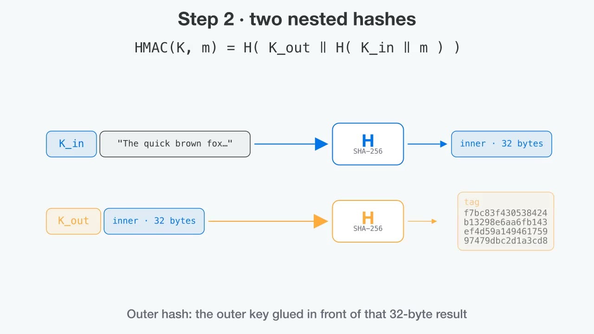

crypto notes · message authentication
Hash It Twice
How HMAC turns a plain hash into a tamper seal, and why the obvious shortcut gets forged.
HMAC is in a lot of places: GitHub webhook signatures, HS256 JWTs, AWS request signing, the six-digit codes in an authenticator app, and the key schedule of TLS 1.3. The definition fits on one line. Still, I didn't really understand it until I saw why the simpler version fails.
The goal is simple. Two people share a secret key. One sends a message with a short tag. The other checks the tag and learns two things: nobody changed the message, and it came from someone who has the key. This isn't encryption, because anyone can still read the message. It only proves the message hasn't been tampered with.
The obvious recipe is tag = SHA256(key ‖ message). It's broken. SHA-256 processes its input in 64-byte blocks and carries a 32-byte state from one block to the next. The final digest is that state. So anyone holding a tag can load it back into the hash and keep feeding in data. The result is a valid tag for key ‖ message ‖ padding ‖ anything, made without ever seeing the key. This is called length extension, and the forge panel further down runs it for real.
HMAC (Bellare, Canetti and Krawczyk, 1996; RFC 2104) fixes this by hashing twice, with two keys derived from your one key:
K′ is the key stretched to exactly one hash block: 64 bytes for SHA-256. If the key is shorter, it's padded with zero bytes. If it's longer, it's hashed first and then padded. ipad is the byte 0x36 repeated 64 times, and opad is 0x5C repeated 64 times. Those two constants differ in exactly half their bits, so the inner key and the outer key look unrelated to the hash function. The animation walks through each step.

Byte lab
Type a key and a message. Every byte below is computed in your browser by a from-scratch SHA-256, then checked against the browser's own Web Crypto HMAC.
The second hash is what saves it. An attacker who extends the tag is only extending the outer hash, which ends up hashing K_out ‖ inner ‖ padding ‖ extra. The verifier never computes anything with that shape. A real tag always comes from K_out followed by exactly 32 bytes, and those 32 bytes are a fresh inner hash of the new message. Producing that inner hash requires the key. The same structure is why HMAC-MD5 and HMAC-SHA1 still have no practical forgeries, even though MD5 and SHA-1 collisions are cheap to find. For new code, use SHA-256 anyway.
Length extension, live
A toy server holds a random 16-byte secret and signs a query string two ways: the naive SHA256(secret ‖ msg) and real HMAC-SHA256. You get the message and both tags. You don't get the secret, only its length, and attackers can usually just try every length. Then you forge.
server secret:
forged message on the wire (red = SHA-256 padding the attacker had to include)
Naive server · SHA256(secret ‖ msg)
HMAC server · HMAC-SHA256
The last trap is on the receiving end. If you check a tag with ==, the comparison stops at the first byte that differs. Response time then grows with every correct leading byte, which lets an attacker recover a valid tag one byte at a time. Python's hmac.compare_digest, Node's crypto.timingSafeEqual and Go's hmac.Equal all touch every byte no matter where the first difference is.
The whole thing, by hand
HMAC from scratch in Python, checked against the standard library. In real code, call hmac.new instead.
import hashlib, hmac
def my_hmac(key: bytes, msg: bytes, H=hashlib.sha256) -> bytes:
B = H().block_size # 64 bytes for SHA-256
if len(key) > B:
key = H(key).digest() # long keys get hashed first
key = key.ljust(B, b"\x00") # then zero-padded to one block
k_in = bytes(b ^ 0x36 for b in key) # ipad
k_out = bytes(b ^ 0x5C for b in key) # opad
inner = H(k_in + msg).digest()
return H(k_out + inner).digest()
key = b"key"
msg = b"The quick brown fox jumps over the lazy dog"
tag = my_hmac(key, msg)
assert tag == hmac.new(key, msg, hashlib.sha256).digest()
print(tag.hex()) # f7bc83f430538424b13298e6aa6fb143ef4d59a14946175997479dbc2d1a3cd8
# verifying: never ==
def verify(key, msg, received_tag) -> bool:
return hmac.compare_digest(my_hmac(key, msg), received_tag)Some notes for using it in practice. Use a random key at least as long as the hash output: 32 bytes for SHA-256. Keys longer than 64 bytes get hashed down to 32, so they add nothing. Put timestamps or nonces inside the signed data, or someone can replay an old message. Verify the exact bytes that were signed, not a re-serialized copy. If verifiers shouldn't be able to sign, switch to real signatures like Ed25519. With HMAC, anyone who can check a tag can also forge one.